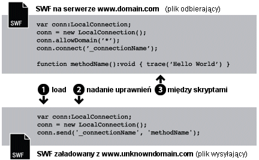
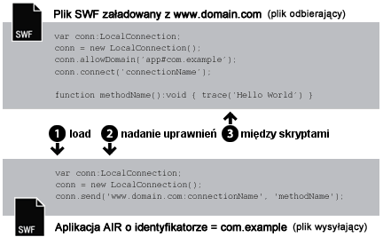
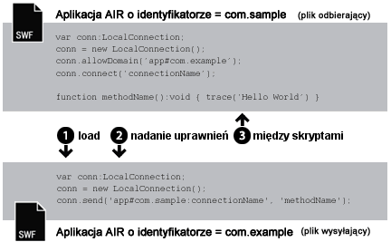

| Pakiet | flash.net |
| Klasa | public class LocalConnection |
| Dziedziczenie | LocalConnection |
| Wersja języka: | ActionScript 3.0 |
| Wersje środowiska wykonawczego: | AIR 1.0, Flash Player 9, Flash Lite 4 |
- w ramach jednego pliku SWF;
- między wieloma plikami SWF;
- między treścią (SWF lub opartą na HTML) w aplikacjach AIR;
- między treścią (SWF lub opartą na HTML) w aplikacji AIR a treścią SWF działającą w przeglądarce.
Obsługa profilów AIR: Ta funkcja jest obsługiwana we wszystkich systemach operacyjnych dla komputerów stacjonarnych oraz na wszystkich urządzeniach telewizyjnych ze środowiskiem AIR, ale nie jest obsługiwana na urządzeniach przenośnych. W czasie wykonywania można sprawdzić, czy funkcja jest obsługiwana, odczytując właściwość LocalConnection.isSupported. Więcej informacji o obsłudze elementów interfejsu API w różnych profilach można znaleźć w sekcji Obsługa profilów aplikacji AIR.
Uwaga: Urządzenia telewizyjne ze środowiskiem AIR obsługują komunikację tylko między zawartością SWF w aplikacjach AIR.
Połączenia lokalne umożliwiają ten rodzaj komunikacji pomiędzy plikami SWF bez konieczności użycia metody fscommand() lub języka JavaScript. Obiekty LocalConnection mogą się komunikować jedynie między plikami uruchomionymi na tym samym komputerze klienckim, ale mogą również być uruchomione w różnych aplikacjach — np. plik uruchomiony przez przeglądarkę i plik SWF uruchomiony w środowisku AIR.
Obiekty LocalConnection utworzone przy użyciu ActionScript 3.0 mogą komunikować się z obiektami LocalConnection utworzonymi za pomocą ActionScript 1.0 lub 2.0. Sytuacja odwrotna jest również możliwa: obiekty LocalConnection utworzone w ActionScript 1.0 lub 2.0 mogą komunikować się z obiektami LocalConnection utworzonymi przy użyciu ActionScript 3.0. Komunikacja pomiędzy obiektami LocalConnection różnych wersji obsługiwana jest przez program Flash Player automatycznie.
Istnieją trzy sposoby dodawania metod wywołań zwrotnych do obiektu LocalConnection:
- Utwórz podklasę klasy LocalConnection i dodaj metody.
- Ustaw dla właściwości
LocalConnection.clientobiekt, który implementuje metody. - Utwórz klasę dynamiczną, która rozszerza klasę LocalConnection i dynamicznie dołącz metody.
W zrozumieniu sposobu w jaki należy korzystać z obiektów LocalConnection w celu zaimplementowania komunikacji pomiędzy dwoma plikami pomocne jest identyfikowanie poleceń użytych w każdym pliku. Jeden plik jest nazywany plikiem odbierającym; jest to plik zawierający metodę, która będzie wywoływana. Plik odbierający musi zawierać obiekt LocalConnection oraz wywołanie metody connect(). Drugi plik nazywany jest plikiem wysyłającym ; jest to plik, który wywołuje metodę. Plik wysyłający musi zawierać obiekt LocalConnection oraz wywołanie metody send().
Korzystanie z metody send() i connect() różni się w zależności od tego, czy pliki znajdują się w tej samej domenie, w różnych domenach z ich przewidywalnymi nazwami lub też w domenach z nieprzewidywalnymi nazwami lub nazwy te są dynamiczne. Te trzy rożne sytuacje wyjaśniają poniższe akapity, które zawierają również przykładowe kody dla każdej z nich.
Jednakowa domena. Zezwolenie na komunikowanie się jedynie pomiędzy obiektami LocalConnection umieszczonymi w tej samej domenie jest najprostszym sposobem używania obiektu LocalConnection, ponieważ domyślnie takiego rodzaju komunikacja jest dozwolona. Podczas komunikowania się plików z tej samej domeny nie ma konieczności implementowania jakiejkolwiek szczególnych form zabezpieczeń, można po prostu przekazać tę samą wartość parametru connectionName do metody connect() i send():

// receivingLC is in http://www.domain.com/receiving.swf
receivingLC.connect('myConnection');
// sendingLC is in http://www.domain.com/sending.swf
// myMethod() is defined in sending.swf
sendingLC.send('myConnection', 'myMethod');
Różne domeny z przewidywalnymi nazwami. Podczas komunikowania się plików SWF z różnych domen należy zezwolić na komunikację pomiędzy dwiema domenami za pomocą wywołania metody allowDomain(). Należy również kwalifikować nazwę połączenia w metodzie send() nazwą domeny obiektu odbierającego LocalConnection:

// receivingLC is in http://www.domain.com/receiving.swf
receivingLC.allowDomain('www.anotherdomain.com');
receivingLC.connect('myConnection');
// sendingLC is in http://www.anotherdomain.com/sending.swf
sendingLC.send('www.domain.com:myConnection', 'myMethod');
Różne domeny z nieprzewidywalnymi nazwami. Czasami istnieje chęć uczynienia pliku z obiektem odbierającym LocalConnection bardziej przenośnym pomiędzy domenami. Aby uniknąć określania nazwy domeny w metodzie send(), lecz wskazać, że wysyłanie i odbiór obiektów LocalConnection nie odbywa się w tej samej domenie, należy poprzedzić nazwę połączenia znakiem podkreślenia (_) w obu wywołaniach metod connect() i send(). Aby zezwolić na komunikację pomiędzy dwiema domenami, należy wywołać metodę allowDomain() i przekazać domeny, z których będzie możliwe wywoływanie obiektów LocalConnection. W innym wypadku należy przekazać argument wieloznaczny (*) w celu zezwolenia na wywoływanie ze wszystkich domen:

// receivingLC is in http://www.domain.com/receiving.swf
receivingLC.allowDomain('*');
receivingLC.connect('_myConnection');
// sendingLC is in http://www.anotherdomain.com/sending.swf
sendingLC.send('_myConnection', 'myMethod');
Z programu Flash Player do aplikacji AIR. Obiekt LocalConnection utworzony w obszarze izolowanym aplikacji AIR jako swojego przedrostka połączenia zamiast nazwy domeny używa specjalnego ciągu znaków. Ten ciąg znaków ma postać: app#IDapl.IDwyd, gdzie IDapl to ID aplikacji, a IDwyd to ID wydawcy aplikacji. (Jeśli aplikacja AIR używa ID wydawcy, należy użyć tylko tego ID). Na przykład, jeśli aplikacja AIR ma ID aplikacji "com.przykład" i nie ma ID wydawcy, jako ciągu znaków połączenia lokalnego można użyć: app#com.przykład:mojePołączenie. Aplikacja AIR musi również wywołać metodę allowDomain(), przekazując w wywołaniu domenę początkową pliku SWF:

// receivingLC is an AIR application with app ID = com.example (and no publisher ID)
receivingLC.allowDomain('www.domain.com');
receivingLC.connect('myConnection');
// sendingLC is in http://www.domain.com/sending.swf
sendingLC.send('app#com.example:myConnection', 'myMethod');
Uwaga: Jeśli aplikacja AIR ładuje plik SWF poza obszarem izolowanym aplikacji AIR, wówczas obowiązują takie same zasady nawiązywania połączenia lokalnego jak w przypadku nawiązywania połączenia z plikiem SWF uruchomionym w programie Flash Player.
Z aplikacji AIR do programu Flash Player. Po nawiązaniu komunikacji aplikacji AIR z plikiem SWF uruchomionym w środowisku wykonawczym Flash Player należy zezwolić na jej rozpoczęcie przez wywołanie meotdy allowDomain() i przekazanie przedrostka połączenia aplikacji AIR. Na przykład, jeśli aplikacja AIR ma ID aplikacji "com.przykład" i nie ma ID wydawcy do metody allowDomain() można przekazać ciąg znaków app#com.przykład. Należy również kwalifikować nazwę połączenia w metodzie send() nazwą domeny obiektu odbierającego LocalConnection (dla plików SWF załadowanych z lokalnego systemu plików jako domeny należy użyć "localhost"):

// receivingLC is in http://www.domain.com/receiving.swf
receivingLC.allowDomain('app#com.example');
receivingLC.connect('myConnection');
// sendingLC is an AIR application with app ID = com.example (and no publisher ID)
sendingLC.send('www.domain.com:myConnection', 'myMethod');
Z aplikacji AIR do innej aplikacji AIR. Aby umożliwić komunikację między dwoma aplikacjami AIR, należy zezwolić na jej rozpoczęcie przez wywołanie metody allowDomain() i przekazanie przedrostka połączenia aplikacji wysyłającej AIR. Na przykład, jeśli aplikacja wysyłająca AIR ma ID aplikacji "com.przykład" i nie ma ID wydawcy, do metody allowDomain() aplikacji odbierającej można przekazać ciąg znaków app#com.przykład. Należy również kwalifikować nazwę połączenia w metodzie send() przedrostkiem połączenia obiektu odbierającego LocalConnection:

// receivingLC is an AIR application with app ID = com.sample (and no publisher ID)
receivingLC.allowDomain('app#com.example');
receivingLC.connect('myConnection');
// sendingLC is an AIR application with app ID = com.example (and no publisher ID)
sendingLC.send('app#com.sample:myConnection', 'myMethod');
Obiektów LocalConnection można użyć do wysyłania i odbierania danych w ramach pojedynczego pliku, ale nie jest to typowa implementacja.
Aby uzyskać więcej informacji na temat metod send() i connect(), zobacz omówienie parametru connectionName we wpisach dotyczących metod LocalConnection.send() oraz LocalConnection.connect(). Zobacz również wpisy dotyczące metody allowDomain() oraz domain.
Powiązane elementy interfejsu API
flash.net.LocalConnection.allowDomain()
flash.net.LocalConnection.domain
 Ukryj dziedziczone właściwości publiczne
Ukryj dziedziczone właściwości publiczne Pokaż dziedziczone właściwości publiczne
Pokaż dziedziczone właściwości publiczne| Właściwość | Zdefiniowane przez | ||
|---|---|---|---|
| client : Object
Wskazuje obiekt, w ramach którego są uaktywniane metody wywołań zwrotnych. | LocalConnection | ||
 | constructor : Object
Odwołanie do obiektu klasy lub funkcji konstruktora, dotyczące danej instancji obiektu. | Object | |
| domain : String [tylko do odczytu]
Ciąg znaków reprezentujący domenę bieżącego pliku. | LocalConnection | ||
| isPerUser : Boolean
Określa, czy zasięg obiektu LocalConnection jest ograniczony do bieżącego użytkownika (true), czy też obiekt ten jest globalnie dostępny dla wszystkich użytkowników komputera (false). | LocalConnection | ||
| isSupported : Boolean [statyczny] [tylko do odczytu]
Właściwość isSupported ma wartość true, jeśli na bieżącej platformie jest obsługiwana klasa LocalConnection; w przeciwnym razie ma wartość false. | LocalConnection | ||
| Metoda | Zdefiniowane przez | ||
|---|---|---|---|
Tworzy nowy obiekt LocalConnection. | LocalConnection | ||
| addEventListener(type:String, listener:Function, useCapture:Boolean = false, priority:int = 0, useWeakReference:Boolean = false):void
Rejestruje obiekt detektora zdarzeń w obiekcie EventDispatcher, dzięki czemu detektor będzie otrzymywał powiadomienia o zdarzeniu. | EventDispatcher | |
Pozwala określić domenę lub domeny, które mogą wysyłać wywołania typu LocalConnection do tej instancji obiektu LocalConnection. | LocalConnection | ||
Pozwala określić domenę lub domeny z możliwością wysyłania wywołań LocalConnection do tego obiektu LocalConnection. | LocalConnection | ||
Zamyka obiekt LocalConnection (co skutkuje rozłączeniem). | LocalConnection | ||
Przygotowuje obiekt LocalConnection na odbieranie poleceń wysyłanych za pośrednictwem polecenia send() (z wysyłającego obiektu LocalConnection). | LocalConnection | ||
|
Wywołuje zdarzenie, tj. kieruje je do przepływu zdarzeń. | EventDispatcher | |
|
Sprawdza, czy obiekt EventDispatcher zawiera jakiekolwiek detektory zarejestrowane dla konkretnego typu zdarzeń. | EventDispatcher | |
|
Wskazuje, czy dla obiektu zdefiniowano określoną właściwość. | Object | |
|
Wskazuje, czy instancja klasy Object należy do łańcucha prototypów obiektu określonego jako parametr. | Object | |
|
Wskazuje, czy określona właściwość istnieje i jest przeliczalna. | Object | |
|
Usuwa detektor z obiektu EventDispatcher. | EventDispatcher | |
Wywołuje metodę o nazwie methodName w ramach połączenia otwartego za pomocą metody connect(connectionName) (w odbierającym obiekcie LocalConnection). | LocalConnection | ||
|
Ustawia dostępność właściwości dynamicznej używanej w pętlach. | Object | |
|
Zwraca ciąg reprezentujący obiekt — sformatowany zgodnie z konwencjami właściwymi dla ustawień regionalnych. | Object | |
|
Zwraca ciąg reprezentujący określony obiekt. | Object | |
|
Zwraca pierwotną wartość dla określonego obiektu. | Object | |
|
Sprawdza, czy detektor zdarzeń określonego typu jest zarejestrowany w tym obiekcie EventDispatcher lub jego elementach macierzystych. | EventDispatcher | |
| Zdarzenie | Podsumowanie | Zdefiniowane przez | ||
|---|---|---|---|---|
| [zdarzenie broadcast] Wywoływane, gdy program Flash Player lub aplikacja środowiska wykonawczego AIR uzyskuje fokus w systemie operacyjnym i przechodzi w stan aktywny. | EventDispatcher | ||
| Wywoływana w przypadku asynchronicznego zgłoszenia wyjątku — pochodzącego z macierzystego kodu asynchronicznego. | LocalConnection | |||
| [zdarzenie broadcast] Wywoływane, gdy program Flash Player lub aplikacja AIR traci fokus w systemie operacyjnym i przechodzi w stan nieaktywny. | EventDispatcher | ||
| Wywoływana, jeśli wywołanie metody LocalConnection.send() skutkuje próbą wysłania danych do innego obszaru izolowanego. | LocalConnection | |||
| Wywoływana, gdy obiekt LocalConnection zgłasza swój stan. | LocalConnection | |||
client | właściwość |
client:Object| Wersja języka: | ActionScript 3.0 |
| Wersje środowiska wykonawczego: | AIR 1.0, Flash Player 9, Flash Lite 4 |
Wskazuje obiekt, w ramach którego są uaktywniane metody wywołań zwrotnych. Domyślnym obiektem jest to (this) tworzone połączenie lokalne. Właściwość client można ustawić na inny obiekt i metody wywołania zwrotnego będą wywoływane na rzecz tego innego obiektu.
Implementacja
public function get client():Object public function set client(value:Object):voidZgłasza
TypeError — Właściwość client musi obiektem różnym od wartości null.
|
domain | właściwość |
domain:String [tylko do odczytu] | Wersja języka: | ActionScript 3.0 |
| Wersje środowiska wykonawczego: | AIR 1.0, Flash Player 9, Flash Lite 4 |
Ciąg reprezentujący domenę bieżącego pliku.
Jeśli treść działająca w obszarze izolowanym zabezpieczeń application środowiska Adobe AIR (treść instalowana z aplikacją AIR), środowisko wykonawcze zamiast naddomeny wpisuje ciąg znaków app#, po którym następuje identyfikator aplikacji AIR (zdefiniowany w pliku deskryptora aplikacji). Na przykład wartość connectionName dla aplikacji o identyfikatorze com.example.air.MyApp connectionName jest tłumaczona na"app#com.example.air.MyApp:connectionName".
W plikach SWF opublikowanych dla programu Flash Player 9 lub późniejszych wersji zwrócony ciąg znaków jest dokładną domeną pliku, włącznie z poddomenami. Na przykład, jeśli plik jest umieszczony na stronie www.adobe.com, to polecenie zwróci "www.adobe.com".
Jeśli bieżący plik jest plikiem lokalnym znajdującym się na komputerze klienckim i działającym w programie Flash Player, to polecenie zwraca "localhost".
Najpowszechniejszymi sposobami na korzystanie z tej właściwości są dołączenie nazwy domeny wysyłającego obiektu LocalConnection jako parametru dla metody, która zostanie wywołana w odbierającym obiekcie LocalConnection object lub użycie jej w metodzie LocalConnection.allowDomain() w celu zaakceptowania poleceń z określonej domeny. Jeśli umożliwi się komunikację jedynie pomiędzy obiektami LocalConnection znajdującymi się w tej samej domenie, prawdopodobnie nie będzie potrzeby korzystania z tej właściwości.
Implementacja
public function get domain():StringPowiązane elementy interfejsu API
isPerUser | właściwość |
isPerUser:Boolean| Wersja języka: | ActionScript 3.0 |
| Wersje środowiska wykonawczego: | Flash Player 10.0.32, AIR 1.5.2 |
Określa, czy zasięg obiektu LocalConnection jest ograniczony do bieżącego użytkownika (true), czy też obiekt ten jest globalnie dostępny dla wszystkich użytkowników komputera (false). Ta właściwość ma wpływ wyłącznie na treść działającą w systemie Mac OS X; pozostałe platformy ignorują ten parametr. Połączenia w systemach operacyjnych Windows i Linux są zawsze przypisane do konkretnego użytkownika.
W programie Flash Player 10.0.22 i wcześniejszych wersjach oraz w środowisku AIR 1.5.1 i wcześniejszych wersjach wszystkie obiekty LocalConnection w systemie Mac OS X mają zasięg globalny. Tę właściwość należy zawsze ustawiać na true, chyba że konieczne jest zachowanie zgodności z wcześniejszymi wersjami. W przyszłych wersjach domyślna wartość tej właściwości może zostać zmieniona na true.
Wartością domyślną jest false.
Implementacja
public function get isPerUser():Boolean public function set isPerUser(value:Boolean):voidisSupported | właściwość |
isSupported:Boolean [tylko do odczytu] | Wersja języka: | ActionScript 3.0 |
| Wersje środowiska wykonawczego: | Flash Player 10.1, AIR 2 |
Właściwość isSupported ma wartość true, jeśli na bieżącej platformie jest obsługiwana klasa LocalConnection; w przeciwnym razie ma wartość false.
Implementacja
public static function get isSupported():BooleanLocalConnection | () | Konstruktor |
public function LocalConnection()| Wersja języka: | ActionScript 3.0 |
| Wersje środowiska wykonawczego: | AIR 1.0, Flash Player 9, Flash Lite 4 |
Tworzy nowy obiekt LocalConnection. Obiekty LocalConnection umożliwiają komunikację pomiędzy dwoma plikami, które są uruchomione na tym samym komputerze klienckim.
Powiązane elementy interfejsu API
allowDomain | () | metoda |
public function allowDomain(... domains):void| Wersja języka: | ActionScript 3.0 |
| Wersje środowiska wykonawczego: | AIR 1.0, Flash Player 9, Flash Lite 4 |
Pozwala określić domenę lub domeny z możliwością wysyłania wywołań LocalConnection do tego wystąpienia klasy LocalConnection.
Nie można skorzystać z tej metody, aby zezwolić plikom, udostępnianym za pomocą bezpiecznego protokołu (HTTPS), na dostęp z plików udostępnianych przez protokoły bez zabezpieczeń; zamiast tego należy skorzystać z metody allowInsecureDomain().
Tej metody można użyć, aby podrzędny plik z innej domeny mógł dokonywać wywołań LocalConnection do nadrzędnego pliku, nie znając ostatecznej domeny, z której pochodzi plik podrzędny Taka sytuacja ma miejsce np. w momencie korzystania z przekierowań równoważących obciążenie lub serwerów innych firm. W tej sytuacji można skorzystać z właściwości url obiektu LoaderInfo, użytej podczas ładowania, aby otrzymać domenę dla metody allowDomain(). Na przykład, jeśli obiekt Loader zostanie użyty w celu załadowania podrzędnego pliku, po jego załadowaniu można zweryfikować właściwość contentLoaderInfo.url obiektu Loader i wydzielić domenę z pełnego ciągu znaków adresu URL. Po wykonaniu tych czynności należy zaczekać, aż plik zostanie załadowany, ponieważ właściwość contentLoaderInfo.url nie posiada ostatecznej, prawidłowej wartości do czasu całkowitego załadowania.
Może się zdarzyć także sytuacja odwrotna: tworzenie podrzędnego pliku, który będzie akceptował wywołania LocalConnection z jego pliku nadrzędnego, ale nie będzie miał wiedzy na temat domeny własnego pliku nadrzędnego. W tej sytuacji należy zaimplementować tę metodę sprawdzając, czy argument domeny jest zgodny z domeną właściwości loaderInfo.url w załadowanym pliku Ponownie należy wydzielić domenę z pełnego adresu URL z właściwości loaderInfo.url. W tej sytuacji nie ma konieczności czekania na załadowanie nadrzędnego pliku; nadrzędny plik zostanie załadowany zanim załadowany zostanie plik podrzędny.
Korzystając z tej metody, należy wziąć pod uwagę model zabezpieczeń programu Flash Player. Domyślnie obiekt LocalConnection jest skojarzony z obszarem izolowanym pliku, który go utworzył i międzydomenowe wywołania obiektów LocalConnection są niedozwolone, do momentu wywołania w pliku odbierającym metody LocalConnection.allowDomain(). Jednak w aplikacji Adobe AIR zawartość obszaru izolowanego application (zawartość instalowana razem z aplikacją AIR) nie jest ograniczana przez te reguły zabezpieczeń.
Więcej informacji na temat zabezpieczeń zawiera odpowiedni temat w Centrum programistów programu Flash Player w kategorii Bezpieczeństwo.
Uwaga: Postać metody allowDomain() uległa zmianie w porównaniu z tą, jaką miała w ActionScript 1.0 i 2.0. W tych wcześniejszych wersjach metoda allowDomain była metodą wywołania zwrotnego implementowaną przez użytkownika. W ActionScript 3.0 metoda allowDomain() jest metodą wbudowaną LocalConnection, kóry jest wywoływany. Z tą zmianą metoda allowDomain() działa w sposób zbliżony do metody flash.system.Security.allowDomain().
Parametry
... domains — Jeden lub więcej ciągów znaków określające nazwy domen, z których dozwolone będą wywołania LocalConnection. Ten parametr ma dwa szczególne przypadki:
|
Zgłasza
ArgumentError — Wszystkie określone parametry muszą być ciągami znaków różnymi od wartości null.
|
Powiązane elementy interfejsu API
allowInsecureDomain | () | metoda |
public function allowInsecureDomain(... domains):void| Wersja języka: | ActionScript 3.0 |
| Wersje środowiska wykonawczego: | AIR 1.0, Flash Player 9, Flash Lite 4 |
Pozwala określić domenę lub domeny, które mogą wysyłać wywołania typu LocalConnection do tego obiektu LocalConnection.
Metoda allowInsecureDomain() działa podobnie jak metoda allowDomain(), za wyjątkiem tego, że metoda allowInsecureDomain() dodatkowo zezwala plikom, które nie są udostępniane za pomocą HTTPS, aby wywołania LocalConnection były wysyłane do plików SWF, które są udostępniane za pomocą HTTPS. Ta różnica jest znacząca jedynie wtedy, gdy metoda allowInsecureDomain() wywoływana jest z pliku, który został załadowany za pomocą HTTPS. Metodę allowInsecureDomain() należy wywołać nawet wtedy, gdy napotkana obwiednia jest inna niż HTTPS/HTTPS w tej samej domenie; domyślnie na wywołania LocalConnection z plików nieudostępnianych za pomocą HTTPS do plików udostępnianych za pomocą HTTPS nigdy nie ma zezwolenia, nawet wewnątrz tej samej domeny.
Wywoływanie metody allowInsecureDomain() nie jest zalecane, ponieważ może to narażać bezpieczeństwo oferowane przez protokół HTTPS. Podczas ładowania pliku za pomocą HTTPS można być pewnym, że plik nie zostanie naruszony w czasie dostarczania przez sieć. Jeśli plikom nieudostępnianym za pomocą HTTPS zezwoli się na wywołania LocalConnection do plików udostępnianych za pomocą HTTPS, zaakceptowane zostaną wywołania z pliku, które mogły w rzeczywistości zostać naruszone podczas dostarczania. Wymaga to zazwyczaj dodatkowej czujności, ponieważ nie można ufać autentyczności wywołań LocalConnection, które dostarczane są do pliku udostępnianego za pomocą HTTPS.
Domyślnie do plików udostępnianych za pomocą protokołu HTTPS dostęp mogą uzyskać jedynie inne pliki udostępniane za pomocą protokołu HTTPS. Ta implementacja zachowuje integralność zapewnianą przez protokół HTTPS.
Korzystanie z tej metody w celu nadpisania domyślnego zachowania nie jest zalecane, ponieważ naraża to zabezpieczenia HTTPS. Jednak może zaistnieć potrzeba jej użycia, na przykład, jeśli potrzebne jest zezwolenie na dostęp do plików SWF HTTPS opublikowanych dla programu Flash Player 9 lub późniejszych wersji z plików SWF HTTP opublikowanych dla programu Flash Player 6 lub wcześniejszych wersji.
Więcej informacji na temat zabezpieczeń zawiera odpowiedni temat w Centrum programistów programu Flash Player w kategorii Bezpieczeństwo.
Parametry
... domains — Jeden lub więcej ciągów znaków określające nazwy domen, z których dozwolone będą wywołania LocalConnection. Istnieją dwa specjalne przypadki dla tego parametru:
|
Zgłasza
ArgumentError — Wszystkie określone parametry muszą być ciągami znaków różnymi od wartości null.
|
Powiązane elementy interfejsu API
close | () | metoda |
public function close():void| Wersja języka: | ActionScript 3.0 |
| Wersje środowiska wykonawczego: | AIR 1.0, Flash Player 9, Flash Lite 4 |
Zamyka obiekt LocalConnection (co skutkuje rozłączeniem). To polecenie należy wydać, jeśli nie ma już dłużej potrzeby, aby obiekt przyjmował polecenia — na przykład, jeśli wydawane jest polecenie connect() z użyciem takiego samego parametru connectionName w innym pliku SWF.
Zgłasza
ArgumentError — Instancja LocalConnection nie jest połączona, dlatego nie może zostać zamknięta.
|
Powiązane elementy interfejsu API
connect | () | metoda |
public function connect(connectionName:String):void| Wersja języka: | ActionScript 3.0 |
| Wersje środowiska wykonawczego: | AIR 1.0, Flash Player 9, Flash Lite 4 |
Przygotowuje obiekt LocalConnection do odbierania poleceń wysyłanych za pośrednictwem polecenia send() (z wysyłającego obiektu LocalConnection). Obiekt używany w metodzie connect() nazywany jest odbierającym obiektem LocalConnection. Obiekty wysyłający i odbierający muszą być uruchomione na tym samym komputerze klienckim.
Aby uniknąć sytuacji wyścigu, należy zdefiniować metody dołączane do odbierającego obiektu LocalConnection przed wywołaniem tej metody tak, jak pokazano w przykładzie klasy LocalConnection.
Domyślnie argument connectionName jest tłumaczony na wartość " superdomain :connectionName" , gdzie superdomain jest naddomeną pliku zawierającego polecenie connect(). Na przykład, jeśli plik zawierający obiekt LocalConnection jest umieszczony w www.someDomain.com, parametr connectionName dzieli się na "someDomain.com:connectionName". (Jeśli plik jest umieszczony na komputerze klienckim, wartością właściwości superdomain jest "localhost").
Jeśli treść działająca w obszarze izolowanym zabezpieczeń application środowiska Adobe AIR (treść instalowana z aplikacją AIR), środowisko wykonawcze zamiast naddomeny wpisuje ciąg znaków app#, po którym następuje identyfikator aplikacji AIR (zdefiniowany w pliku deskryptora aplikacji). Na przykład wartość connectionName dla aplikacji o identyfikatorze com.example.air.MyApp connectionName jest tłumaczona na"app#com.example.air.MyApp:connectionName".
Domyślnie program Flash Player zezwala również obiektowi odbierającemu LocalConnection na przyjmowanie poleceń tylko od obiektu LocalConnection, którego nazwa połączenia również daje się podzielić na wartości "naddomena:nazwaPołączenia". W ten sposób program Flash Player ułatwia plikom umieszczonym w tej samej domenie komunikowanie się między sobą.
Implementując komunikację pomiędzy plikami z tej samej domeny, należy określić ciąg znaków dla parametru connectionName, który nie rozpoczyna się znakiem podkreślenia (_) i nie precyzuje nazwy domeny (np. "myDomain:connectionName"). Użyj tej samego ciągu znaków w metodzie connect(connectionName).
Implementując komunikację pomiędzy plikami z różnych domen, należy określić ciąg znaków dla parametru connectionName, który rozpoczyna się znakiem podkreślenia (_) czyniąc tym samym plik z obiektem odbierającym LocalConnection bardziej przenośnym pomiędzy domenami. Istnieją dwa możliwe przypadki:
- Jeśli ciąg znaków dla parametru
connectionNamenie zawiera znaku podkreślenia (_), dodawany jest przedrostek w postaci naddomeny i dwukropka (np."myDomain:connectionName"). Chociaż ta metoda zapewnia, że połączenie użytkownika nie wejdzie w konflikt z połączeniami o tej samej nazwie z pozostałych domen, dla obiektów wysyłających LocalConnection należy określić tę samą naddomenę (np."mojaDomena:nazwaPołączenia"). Jeśli plik z odbierającym obiektem LocalConnection zostanie przeniesiony do innej domeny, odtwarzacz zmieni prefiks tak, aby odzwierciedlał nową naddomenę (np."anotherDomain:connectionName"). Wszystkie wysyłające obiekty LocalConnection należy edytować ręcznie tak, aby wskazywały na nową naddomenę. - Jeśli ciąg znaków
connectionNamerozpoczyna się od znaku podkreślenia (na przykład"_connectionName"), a przedrostek nie jest dodawany do ciągu znaków. Oznacz to, że wysyłające i odbierające obiekty LocalConnection korzystają z takich samych ciągów znaków dla parametruconnectionName. Jeśli obiekt odbierający korzysta z metodyallowDomain()w celu wyszczególnienia, że połączenia ze wszystkich domen będą akceptowane, plik z obiektem odbierającym LocalConnection może zostać przeniesiony do innej domeny bez zmieniania jakiegokolwiek obiektu wysyłającego LocalConnection.
Aby uzyskać więcej informacji, zobacz omówienie w opisie klasy oraz omówienie parametru connectionName w metodzie send(), a także wpisy dotyczące metody allowDomain() i domain.
Uwaga: Dwukropki są używane jako znaki specjalne w celu rozdzielenia naddomeny od ciągu znaków parametru connectionName. Ciąg znaków parametru connectionName, który zawiera znak dwukropka jest nieprawidłowy.
Korzystając z tej metody, należy wziąć pod uwagę następujący model zabezpieczeń programu Flash Player. Domyślnie obiekt LocalConnection jest skojarzony z obszarem izolowanym pliku, który go utworzył, i międzydomenowe wywołania obiektów LocalConnection są niedozwolone, do momentu wywołania w pliku odbierającym metody LocalConnection.allowDomain(). Istnieje możliwość zablokowania pliku przed korzystaniem z tej metody, ustawiając parametr allowNetworking znaczników object oraz embed na stronie HTML zawierającej treść SWF. Jednak w aplikacji Adobe AIR zawartość obszaru izolowanego application (zawartość instalowana razem z aplikacją AIR) nie jest ograniczana przez te reguły zabezpieczeń.
Więcej informacji na temat zabezpieczeń zawiera odpowiedni temat w Centrum programistów programu Flash Player w kategorii Bezpieczeństwo.
Parametry
connectionName:String — Ciąg znaków odpowiadający nazwie połączenia określonego w poleceniu send(), którego zadaniem jest komunikacja z obiektem odbierającym LocalConnection.
|
Zgłasza
TypeError — Wartość przekazana do parametru connectionName nie może mieć wartości null.
| |
ArgumentError — Ten błąd może pojawić się z trzech powodów: 1) Ciąg znaków przekazany do parametru connectionName miał wartość null. Wprowadź wartość różną od null. 2) Wartość przekazana do parametru connectionName zawiera znak dwukropka (:). Dwukropki są używane jako znaki specjalne w celu rozdzielenia naddomeny od ciągu znaków parametru connectionName w metodzie send(), nie w metodzie connect(). 3) Instancja LocalConnection jest już połączona.
|
Powiązane elementy interfejsu API
send | () | metoda |
public function send(connectionName:String, methodName:String, ... arguments):void| Wersja języka: | ActionScript 3.0 |
| Wersje środowiska wykonawczego: | AIR 1.0, Flash Player 9, Flash Lite 4 |
Wywołuje metodę o nazwie methodName w połączeniu otwartym za pomocą metody connect(connectionName) (w odbierającym obiekcie LocalConnection). Obiekt używany w metodzie send() nazywany jest wysyłającym obiektem LocalConnection. Pliki SWF, które zawierająobiekty wysyłające i odbierające muszą być uruchomione na tym samym komputerze klienckim.
Istnieje ograniczenie do 40 kilobajtów dla danych przekazywanych jako parametr do tej metody. Jeśli metoda send() zgłasza błąd ArgumentError mimo, że składnia jest poprawna, należy spróbować rozdzielić żądania send() na wiele poleceń, z których każde obsłuży mniej niż 40 KB danych.
Tak jak wspomniano w omówieniu metody connect(), domyślnie do nazwy connectionName dodawana jest bieżąca naddomena. Implementując komunikację pomiędzy różnymi domenami, należy zdefiniować parametr connectionName w obu, wysyłających i odbierających, obiektach LocalConnection w taki sposób, by bieżąca naddomena nie była dodawana do parametru connectionName. Można tego dokonać w jeden z następujących sposobów:
- Użyj znaku podkreślenia (_) na początku parametru
connectionNamew obu obiektach LocalConnection — wysyłającym i odbierającym. W pliku zawierającym obiekt odbierający, użyj metodyLocalConnection.allowDomain()w celu wyszczególnienia, że połączenia ze wszystkich domen będą akceptowane. Ta implementacja pozwala na przechowywanie wysyłających i odbierających plików w każdej domenie. - Dołącz naddomenę w parametrze
connectionNamew obiekcie wysyłającym LocalConnection — na przykładmyDomain.com:myConnectionName. W obiekcie odbierającym skorzystaj z metodyLocalConnection.allowDomain()w celu wyszczególnienia, że akceptowane będą połączenia z określonej naddomeny (w tym przypadku, myDomain.com) lub akceptowane będą połączenia ze wszystkich domen.
Uwaga: Nie należy określać naddomeny w parametrze connectionName dla odbierającego obiektu LocalConnection — można to zrobić jedynie w obiekcie wysyłającym LocalConnection.
Korzystając z tej metody, należy wziąć pod uwagę następujący model zabezpieczeń programu Flash Player. Domyślnie obiekt LocalConnection jest skojarzony z obszarem izolowanym pliku, który go utworzył, i międzydomenowe wywołania obiektów LocalConnection są niedozwolone, do momentu wywołania w pliku odbierającym metody LocalConnection.allowDomain(). W przypadku treści SWF działającej w przeglądarce istnieje możliwość zapobieżenia użyciu tej metody w pliku; należy w tym celu ustawić parametr allowNetworking znaczników object oraz embed na stronie HTML zawierającej treść SWF. Jednak w aplikacji Adobe AIR zawartość obszaru izolowanego application (zawartość instalowana razem z aplikacją AIR) nie jest ograniczana przez te reguły zabezpieczeń.
Więcej informacji na temat zabezpieczeń zawiera odpowiedni temat w Centrum programistów programu Flash Player w kategorii Bezpieczeństwo.
Parametry
connectionName:String — Zgodnie z nazwą połączenia określoną w poleceniu connect(), które będzie komunikować się z obiektem wysyłającym LocalConnection.
| |
methodName:String — Nazwa metody, która zostanie wywołana w obiekcie odbierającym LocalConnection. Następujące nazwy metod skutkują niepowodzeniem wykonania polecenia: send, connect, close, allowDomain, allowInsecureDomain, client oraz domain.
| |
... arguments — Dodatkowe, opcjonalne parametry przekazywane do określonej metody.
|
Zdarzenia
securityError: — Metoda LocalConnection.send() usiłowała komunikować się z plikiem SWF z obszaru izolowanego zabezpieczeń, do którego kod wywołania nie ma dostępu. Istnieje możliwość obejścia tej sytuacji w implementacji metody LocalConnection.allowDomain() obiektu odbierającego.
| |
status: — Jeśli właściwość level ma wartość "status", wywołanie powiodło się; jeśli ma wartość "error", wywołanie nie powiodło się. Wywołanie może zakończyć się niepowodzeniem, jeśli plik SWF odrzuci połączenie.
|
Zgłasza
TypeError — Wartością parametru connectionName lub methodName jest wartość null. Dla tych parametrów należy przekazać wartość różną od null.
| |
ArgumentError — Ten błąd może wystąpić z jednego z następujących powodów: 1) Wartością parametru connectionName lub methodName jest pusty ciąg znaków. Dla tych parametrów należy przekazać prawidłowe ciągi znaków. 2) Wywołanie metody określonej w parametrze methodName jest niedozwolone. 3) Serializowany komunikat, który jest wysyłany, jest zbyt duży (ponad 40 kB).
|
Powiązane elementy interfejsu API
asyncError | Zdarzenie |
flash.events.AsyncErrorEventwłaściwość AsyncErrorEvent.type =
flash.events.AsyncErrorEvent.ASYNC_ERROR| Wersja języka: | ActionScript 3.0 |
| Wersje środowiska wykonawczego: | AIR 1.0, Flash Player 9, Flash Lite 4 |
Wywoływana w przypadku asynchronicznego zgłoszenia wyjątku — pochodzącego z macierzystego kodu asynchronicznego.
StałaAsyncErrorEvent.ASYNC_ERROR definiuje wartość właściwości type obiektu zdarzenia asyncError.
To zdarzenie ma następujące właściwości:
| Właściwość | Wartość |
|---|---|
bubbles | false |
cancelable | false; nie ma domyślnego zachowania, które można byłoby anulować. |
currentTarget | Obiekt przetwarzający aktywnie obiekt Event za pomocą detektora zdarzeń. |
target | Obiekt wywołujący zdarzenie |
error | Błąd, który spowodował wywołanie zdarzenia. |
securityError | Zdarzenie |
flash.events.SecurityErrorEventwłaściwość SecurityErrorEvent.type =
flash.events.SecurityErrorEvent.SECURITY_ERROR| Wersja języka: | ActionScript 3.0 |
| Wersje środowiska wykonawczego: | AIR 1.0, Flash Player 9, Flash Lite 4 |
Wywoływana, jeśli wywołanie metody LocalConnection.send() skutkuje próbą wysłania danych do innego obszaru izolowanego.
SecurityErrorEvent.SECURITY_ERROR definiuje wartość właściwości type obiektu zdarzenia securityError.
To zdarzenie ma następujące właściwości:
| Właściwość | Wartość |
|---|---|
bubbles | false |
cancelable | false; nie ma domyślnego zachowania, które można byłoby anulować. |
currentTarget | Obiekt przetwarzający aktywnie obiekt Event za pomocą detektora zdarzeń. |
target | Obiekt sieciowy zgłaszający błąd zabezpieczeń. |
text | Tekst, który ma być wyświetlany w charakterze komunikatu o błędzie. |
Powiązane elementy interfejsu API
status | Zdarzenie |
flash.events.StatusEventwłaściwość StatusEvent.type =
flash.events.StatusEvent.STATUS| Wersja języka: | ActionScript 3.0 |
| Wersje środowiska wykonawczego: | AIR 1.0, Flash Player 9, Flash Lite 4 |
Dysponowana, gdy obiekt LocalConnection zgłasza swój stan. Jeśli metoda LocalConnection.send() zakończy się powodzeniem, wartością właściwościlevel obiektu zdarzenia status jest "status"; jeśli wywołanie zakończy się niepowodzeniem właściwość level ma wartość "error". Jeśli odbierający plik odrzuci połączenie, wywołanie może zakończyć się niepowodzeniem bez powiadomienia dla pliku wysyłającego
type obiektu zdarzenia status.
To zdarzenie ma następujące właściwości:
| Właściwość | Wartość |
|---|---|
bubbles | false |
cancelable | false; nie ma domyślnego zachowania, które można byłoby anulować. |
code | Opis stanu obiektu. |
currentTarget | Obiekt przetwarzający aktywnie obiekt Event za pomocą detektora zdarzeń. |
level | Kategoria komunikatu, np. "status", "warning" lub "error". |
target | Obiekt informujący o swoim stanie. |
Powiązane elementy interfejsu API
W pliku SWF LocalConnectionSenderExample tworzona jest instancja LocalConnection i kiedy zostanie naciśnięty przycisk, metoda call() zostanie użyta w celu wywołania metody o nazwie lcHandler w pliku SWF, którego nazwa połączenia to "myConnection," przekazując treść pola TextField jako parametr.
W pliku SWF LocalConnectionReceiverExample tworzona jest instancja LocalConnection i wywoływana jest metoda connect() w celu wskazania tego pliku SWF jako odbiorcy komunikatów, które są adresowane do połączenia o nazwie „myConnection”. Poza tym ta klasa zawiera metodę publiczną o nazwie lcHandler(); ta metoda jest tą, która wywoływana jest przez plik SWF LocalConnectionSenderExample. W czasie momencie·tekst, który jest przekazywany jako parametr, jest dołączany do pola·TextField na stole montażowym.
Uwaga: Aby przetestować ten przykład, oba pliki SWF muszą być ładowane na tym samym komputerze jednocześnie.
// Code in LocalConnectionSenderExample.as
package {
import flash.display.Sprite;
import flash.events.MouseEvent;
import flash.net.LocalConnection;
import flash.text.TextField;
import flash.text.TextFieldType;
import flash.events.StatusEvent;
import flash.text.TextFieldAutoSize;
public class LocalConnectionSenderExample extends Sprite {
private var conn:LocalConnection;
// UI elements
private var messageLabel:TextField;
private var message:TextField;
private var sendBtn:Sprite;
public function LocalConnectionSenderExample() {
buildUI();
sendBtn.addEventListener(MouseEvent.CLICK, sendMessage);
conn = new LocalConnection();
conn.addEventListener(StatusEvent.STATUS, onStatus);
}
private function sendMessage(event:MouseEvent):void {
conn.send("myConnection", "lcHandler", message.text);
}
private function onStatus(event:StatusEvent):void {
switch (event.level) {
case "status":
trace("LocalConnection.send() succeeded");
break;
case "error":
trace("LocalConnection.send() failed");
break;
}
}
private function buildUI():void {
const hPadding:uint = 5;
// messageLabel
messageLabel = new TextField();
messageLabel.x = 10;
messageLabel.y = 10;
messageLabel.text = "Text to send:";
messageLabel.autoSize = TextFieldAutoSize.LEFT;
addChild(messageLabel);
// message
message = new TextField();
message.x = messageLabel.x + messageLabel.width + hPadding;
message.y = 10;
message.width = 120;
message.height = 20;
message.background = true;
message.border = true;
message.type = TextFieldType.INPUT;
addChild(message);
// sendBtn
sendBtn = new Sprite();
sendBtn.x = message.x + message.width + hPadding;
sendBtn.y = 10;
var sendLbl:TextField = new TextField();
sendLbl.x = 1 + hPadding;
sendLbl.y = 1;
sendLbl.selectable = false;
sendLbl.autoSize = TextFieldAutoSize.LEFT;
sendLbl.text = "Send";
sendBtn.addChild(sendLbl);
sendBtn.graphics.lineStyle(1);
sendBtn.graphics.beginFill(0xcccccc);
sendBtn.graphics.drawRoundRect(0, 0, (sendLbl.width + 2 + hPadding + hPadding), (sendLbl.height + 2), 5, 5);
sendBtn.graphics.endFill();
addChild(sendBtn);
}
}
}
// Code in LocalConnectionReceiverExample.as
package {
import flash.display.Sprite;
import flash.net.LocalConnection;
import flash.text.TextField;
public class LocalConnectionReceiverExample extends Sprite {
private var conn:LocalConnection;
private var output:TextField;
public function LocalConnectionReceiverExample() {
buildUI();
conn = new LocalConnection();
conn.client = this;
try {
conn.connect("myConnection");
} catch (error:ArgumentError) {
trace("Can't connect...the connection name is already being used by another SWF");
}
}
public function lcHandler(msg:String):void {
output.appendText(msg + "\n");
}
private function buildUI():void {
output = new TextField();
output.background = true;
output.border = true;
output.wordWrap = true;
addChild(output);
}
}
}
Tue Jun 12 2018, 12:06 PM Z